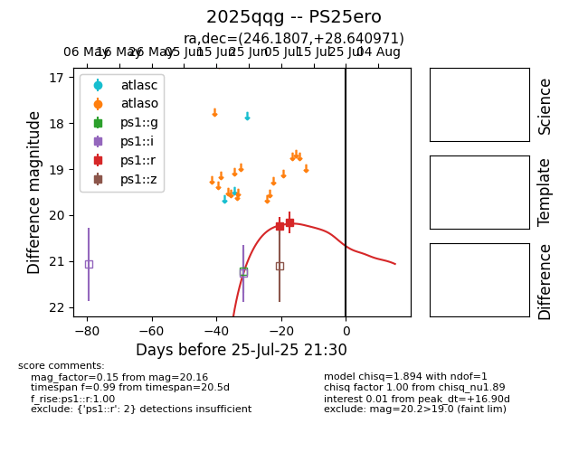

Target 2025qqg at 2025-07-25 21:30, see:
TNS: wis-tns.org/object/2025qqg
YSE: ziggy.ucolick.org/yse/transient_detail/2025qqg
alt names
2025qqg (yse,tns)
PS25ero (panstarrs)
coordinates:
equatorial (ra, dec) = (246.1807,+28.64097)
galactic (l, b) = (47.8517,+43.24576)
photometry
last ps1::r=20.16
2 ps1::r detections
